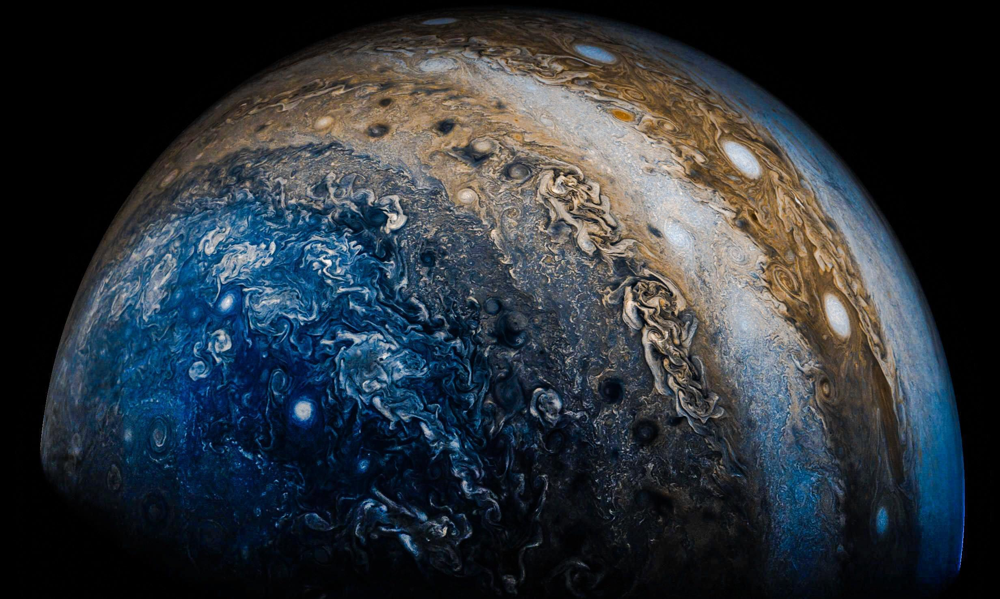

Jupiter
INFORMAȚII DESPRE PLANETA JUPITER
Planeta Jupiter, a cincea planetă de la soare, este un gigant gazos, fiind cea mai mare planetă din sistemul nostru solar, potrivit NASA, de peste două ori mai mare decât toate celelalte planete combinate.
Numeroasele tipuri de urme de gaze din
norii săi îi conferă un aspect multicolor.
Marea Pată Roșie, o furtună masivă cu un
diametru de peste 10.000 de mile, este o
caracteristică proeminentă a planetei
Jupiter. Aceasta se dezlănțuie la peste 400
mph de cel puțin 150 de ani.
Jupiter are un
câmp magnetic puternic și seamănă cu un
mic sistem solar datorită celor 75 de luni ale sale.
CURIOZITĂȚI DESPRE PLANETA JUPITER
- Jupiter este planeta ce se învârte cel mai rapid, din tot sistemul solar.
- Câmpul magnetic al planetei Jupiter este de 15 ori mai puternic decât cel al Pământului.
- Jupiter a fost vizitată de 7 ori de către navele spațiale.
- Jupiter este vizibilă cu ochiul liber de pe Pământ.